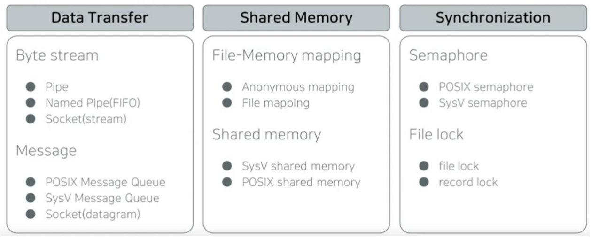
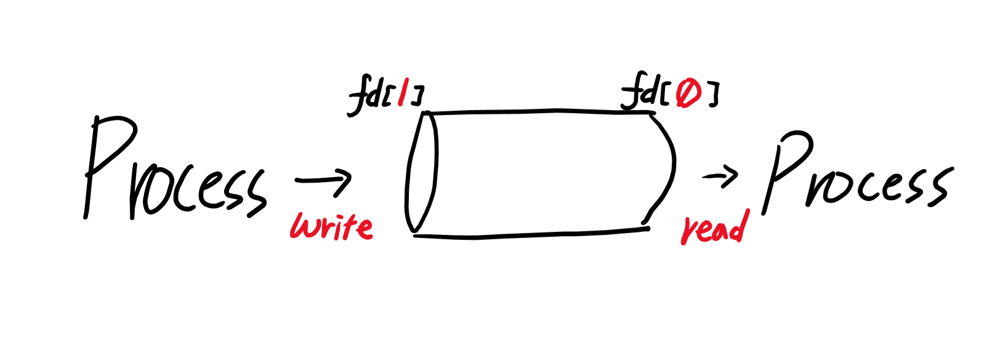
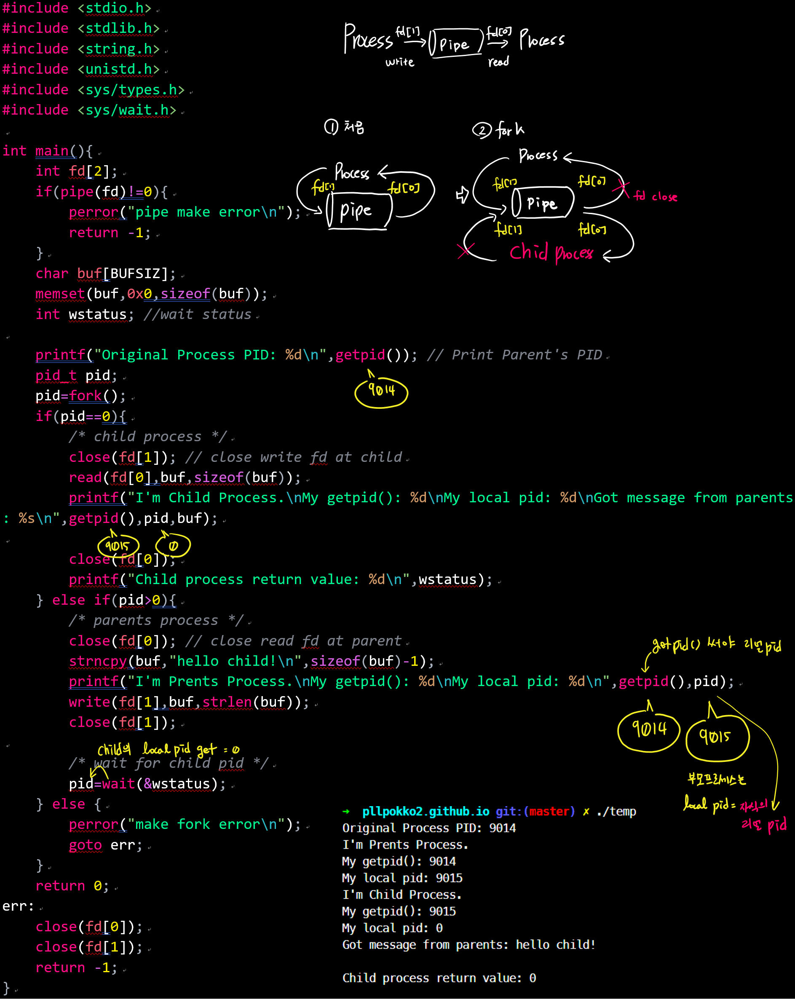
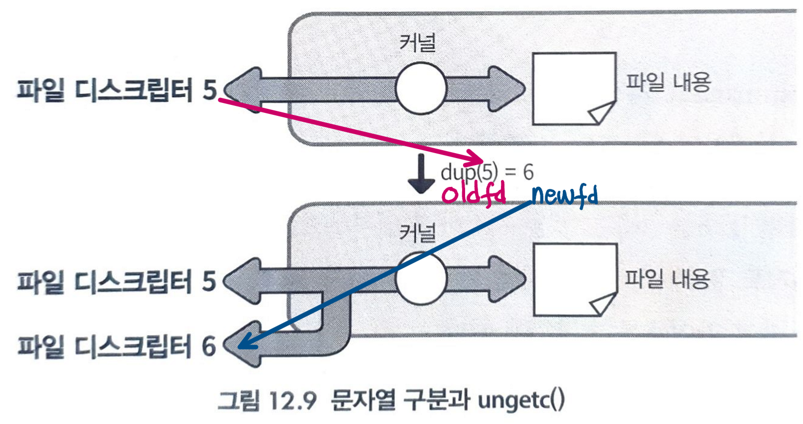
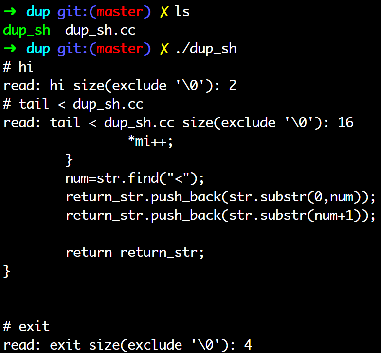

Pipe <1> pipe(), popen()
IPC
- IPC(Inter Process Communication)
- Linux IPC의 종류

Pipe
- Uni-directional byte stream: 그냥 주면 받아야함
- Name, ID가 없음
- related process간에 사용 가능(e.g. fork())
- fd[0]은 read만 가능
- fd[1]은 write만 가능 
#include <unistd.h>
int pipe(int fd[2]);
| return value | describe |
|---|---|
| 0 | 성공 |
| -1 | 실패 |
- pipe가 full일 때, write 시도 -> blocking
- pipe가 empty일 때, read 시도 -> blocking
- write size가 PIPE_BUF 보다 작으면 atomic, 크면 interleaved 될 수 있음
- Linux PIPE_BUF: 4KB
- multiple writer 환경에서 주의!
fork PIPE example 
dup():2, dup2():2
#include <unistd.h>
int dup(int oldfd);
int dup2(int oldfd, int newfd);
- 기능: oldfd를 복제한다.
- dup()은 oldfd를 복제해, 아직 사용하지 않은 제일 작은 값의 fd로 반환한다.
- dup2()는 파일 디스크립터 oldfd를 지정한 파일 디스크립터 newfd에 복제한 뒤 그것을 반환한다.
- 이렇게 copy한 fd는 서로 락, 파일위치, 플래그등을 서로 공유
- 즉, redirection을 사용하기 위해!!!!!
$ cat < test.txt
| return | value |
|---|---|
| 성공 | newfd |
| 실패 | -1 errno set |

- 이렇게 복제(duplicate)하면, fd6(new)에 작업하면, fd5(old)에 작업을 하는 것과 동일한 효과
-
파일 디스크립터를 관리해 파이프를 연결해보자. 셸을 만든다면 표준 입력 출력 파이프로 연결할 필요가 있다.
- 복제한다는것은 그림처럼 하나의 스트림을 커널 안에서 두 개로 분기하는 것을 의미한다.
- fd6(new)에 read()하면, fd5(old)에도 똑같이 읽은 것으로 간주된다.
- lseek()과 같은 파일 오프셋 작업을 하는경우에도 동일하게 적용
- close()할 때, 양쪽 모두 close()
특정 fd에 파이프를 연결 해보자
fd3old <-connected-> PIPE를 fd0new으로 옮기고 싶다.
- close(0): newfd를 혹시나 해서 닫는다.
- dup2(3,0); : oldfd -> newfd duplicate
- close(3): oldfd를 닫기
더 다루기 쉬운 popen()도 있다.
dup을 이용한 redirection 예제
#include <vector>
#include <string>
#include <sys/types.h>
#include <sys/wait.h>
#include <algorithm>
#include <fcntl.h>
#include <string.h>
#include <unistd.h>
using namespace std;
vector<string> makearg(string);
int main(){
char *buf;
vector<string> arg;
int pid=0;
int fd;
int redirect = 0;
// SIGCHLD 시그널을 무시한다.
signal(SIGCHLD, SIG_IGN);
buf=(char *)malloc(sizeof(char)*255);
while(1){
redirect=0;
memset(buf, 0x0, 255);
// 사용자 입력대기용 프롬프트를 띄운다.
write(1, "# ", 3);
if(read(0, buf, 255) > 1){
buf[strlen(buf)-1]='\0';
printf("read: %s size(exclude '\\0'): %lu\n",buf,strlen(buf));
if(strncmp(buf,"exit",4)==0)
exit(0);
/* 만약 읽어들인 문자열중 "<" 이 있다면,
* redirection으로판단하고 makearg 함수를호출하여
* 명령부분과 파일부분을 나눈 후, 파일을 open 한다.
*/
if(strstr(buf,"<")!=NULL){
arg=makearg(buf);
fd=open(arg[1].c_str(), O_RDONLY);
if(fd<0){
fprintf(stderr, "file not found: %s\n", arg[1].c_str());
exit(0);
}
redirect=1;
strcpy(buf, arg[0].c_str());
pid=fork();
if(pid==0){
// 만약 재지향이 사용되었다면, 열린 파일을 표준입력으로 복사한다.
if(redirect)
dup2(fd,0);
// 명령부분을 execl 계열 함수를 이용해서
// 실행시킨다.
execlp(buf, buf, NULL);
} else if (pid>0){
if(redirect)
close(fd);
wait(0);
}
}
}
}
}
/*
* 문자열을 "<"를 기준으로 나누고 공백문자를 제거한 뒤에
* vector로 되돌려준다.
*/
vector<string> makearg(string str){
int num;
vector<string> return_str;
string::iterator mi;
mi=str.begin();
while(mi!=str.end()){
if(*mi==' ')
str.erase(mi);
*mi++;
}
num=str.find("<");
return_str.push_back(str.substr(0,num));
return_str.push_back(str.substr(num+1));
return return_str;
}

popen():3
#include <stdio.h>
FILE *popen(const char *command, const char *mode);
- 기능: command로 지정한 프로그램 가동 + 거기에 파이프를 연결해 해당 스트림에 반환
| return | value |
|---|---|
| 성공 | 파이프에 read혹은 write가능한 open stream 포인터 get |
| 실패 | NULL errno set |
| mode | Description |
|---|---|
| “r” | 읽기용으로 열기 |
| “w” | 쓰기용으로 열기 |
주의!: 읽고 쓰기 동시 불가
주의!: popen()에서는 프로그램이 셸을 거쳐 실행되므로 첫 번째 인자의 command는 PATH에서 찾을 수 있고, 리다이렉션이나 파이프도 사용할 수 있다.
pclose():3
#include <stdio.h>
int pclose(FILE *stream);
- 기능: pclose()는 popen()으로 fork()한 자식 프로세스를 wait()하고 그 후에 스트림을 닫는다.
popen()을 사용해 연 FILE*는 반드시 pclose()로 끌 것!
| return | value |
|---|---|
| 성공 | exit status of command |
| 실패 | -1 errno set |